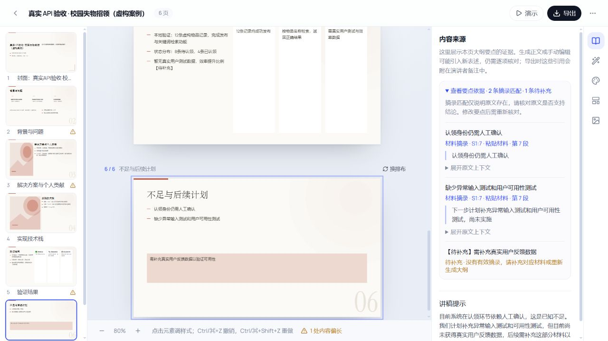

AI PRESENTATIONS / PERSONAL PROJECT
同一份材料，
讲给不同的人。
先理解听众和沟通目标，再规划叙事、核对材料、生成可编辑 PPTX。让 AI 帮你组织讲述的顺序。
成果预览无需登录或 API Key · 在线生成服务需自行部署
FROM MATERIAL TO STORY
给谁讲？希望他们理解什么、决定什么？
先组织讲述顺序，让材料、推断和缺口可见。
审阅每一页，导出带讲述备注的可编辑 PPTX。
PSYCHOLOGY-INFORMED DESIGN
把“听众需要什么”放进生成流程
理论用于指导设计，尚未验证听众效果。
三个参考，三个设计问题
认知负荷：新概念是否太多？根据知识基础组织分段与术语解释，让每页聚焦一个问题。
多媒体学习：文字和图形是否在解释同一件事？用标题提示重点，给证据和图文关系留出空间。
ELM：听众要做什么判断？结合目标与处理条件安排论据深度，保留依据、替代方案和局限。
这些是本产品的设计应用，没有实时心理测量。用户要求优先于预设。
同一份技术方案，三种切入点
给学术评审：先说研究问题，再展示方法、结果与局限。
给技术同行：先说约束，再讨论替代方案、关键机制与故障边界。
给入门听众：从熟悉情境进入，解释必要概念，再用例子展开。
这是代码中的预设逻辑示例，并非三组模型对照实验。另有管理者、投资/业务及自定义预设。
读设计故事与理论依据 ↗PRODUCT WALKTHROUGH
先看一次完整的使用路径
以下是应用截图，材料来自虚构测试案例。

REAL MODEL OUTPUTS
打开产物，再判断有没有用
实际模型：DMXAPI-deepseek-v4-flash
四份未手工润色的 PPTX
同一份虚构材料，学术听众，2026-10-06 实测。下载后可检查文字、版式和讲述备注。
每档一轮，均完成生成和 PPTX 回读。质量提示仍需处理；这不是成功率或性能承诺。查看完整验收记录 ↗
5 页样例 · 原文摘录
以下为 PPTX 中直接提取的文字，不代表实际幻灯片排版。案例中的“失物招领平台”是虚构素材，不是本产品。
01校园失物找得到吗？一个关键词检索原型的验证
校园失物招领平台：虚构软件验收材料
学生需翻遍多个群聊查找失物，认领后消息仍被转发 缺少统一入口：发布、检索与状态跟踪
原型聚焦：发布、分类检索、状态更新 未实现：图片识别、智能匹配、支付、跨校区推荐
12条 人工构造测试记录 8条待认领，4条已认领；证件4、电子3、日用品5
以下项目、记录和测试结果均为人工构造的验收场景，不代表真实业务成绩。所有数值只用于验证PPT生成，不得推断真实用户、效率提升、商业收益或上线日期。
02为什么选择关键词搜索而非语义检索？
可解释性强，便于调试与定位问题 无需外部服务，降低系统依赖
可能遗漏同义表述，需用户适配关键词 未与语义检索对比准确率（备选方向，尚未实施）
此取舍基于设计解释，非经实验验证的最优结论。
03本地验证核心路径：发布→检索→状态更新
12 构造测试记录（条） 覆盖证件、电子设备、日用品三类
8 待认领 / 4 已认领 状态分布 用于检查状态标签与更新流程
拾获者填写描述与类别 → 记录保存 失主通过关键词和分类筛选候选物品 线下人工核验身份 → 状态更新为已认领
搜索命中仅缩小候选范围，不自动判定归属；核验仍需人工介入。
04已实现 vs 未验证：边界在哪里？
页面开发、发布/检索/状态接口、本地数据准备与基本功能测试——已由个人完成 用户角色（失主、拾获者、管理员）来自场景设定，尚未经用户访谈验证
高并发更新、误操作恢复、恶意认领防护——均未验证 超长输入、特殊字符、异常网络等查询边界未覆盖
05一个可讨论的问题：不绑定身份，如何提高认领可信度？
原型已连接发布、检索和状态展示的基本流程，本地虚构数据可用于演示 真实用户价值、规模化性能及完整安全性仍待验证 待开展：异常输入测试、网络中断恢复观察、用户可用性测试与同义词查询案例
核心路径可演示 当前阶段 基于人工构造测试数据，不代表真实用户效率
各项均属计划，未指定完成日期、预算、负责人数量或达标阈值。不能声称节省时间或提高成功率。
ENGINEERING NOTES
5 页能生成，20 页为什么失败？
最初，长大纲在模型读取阶段超时。分批后又暴露出页数与证据类型错误。修复涉及输出规模、业务约束、重试边界和后台任务状态。
Schema 与业务校验 → 失败批次局部重试 → 按页序合并
LangGraph 管理阶段；LangChain 对接模型；Pydantic 校验结构。当前参数未经过系统调优，分批也会增加调用次数。
带着自己的材料运行
Windows 安装 Python 3.12+、Node.js 22.22+，启动 Docker Desktop 后：
git clone https://github.com/BStronger1/narrative-ppt.git
cd narrative-ppt
powershell -ExecutionPolicy Bypass -File ./scripts/start.ps1 -DemoDemo 使用规则摘录，不调用模型。真实 AI 生成需关闭演示模式并配置模型接口。完整启动与配置说明 ↗
BUILD WITH REAL FEEDBACK
你的下一次汇报，卡在哪一步？
告诉我听众、页数和最需要改进的一点。觉得有用，也可以 Star 留作下次使用。